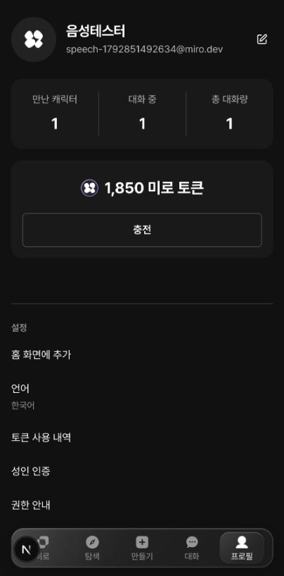
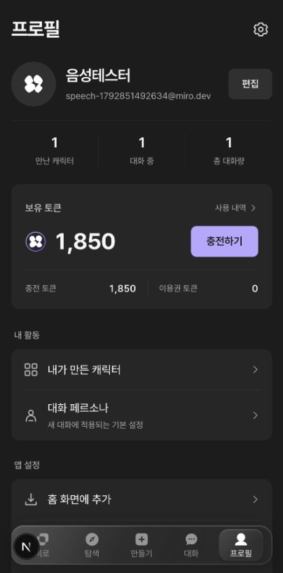

원본 PNG 픽셀 크기와 주색상은 직접 측정. 각 1125×2436px를 3으로 나눈 375×812 CSS px 기준으로 비교한다. 이는 3x 표시 가정이며 스크린샷만으로 실제 CSS, 폰트 패밀리/정확한 굵기, 그림자 blur·alpha는 복원할 수 없다. 구성요소의 치수·글자 크기·반경은 경계/자형 기반 근삿값이다. Miro 적용값은 소스에 설정한 실제 값이다.
| 컴포넌트 | 레퍼런스 ① | 레퍼런스 ② | 레퍼런스 ③ | 레퍼런스 ④ | Miro 적용 |
|---|---|---|---|---|---|
| 화면 기준 | 375 × 812 | 375 × 812 | 375 × 812 | 375 × 812 | 모바일 전체 너비, 본문 최대 600px |
| 좌우 여백 | 16px | 16px | 16px | 20px | 16px |
| 화면 배경 | #F8F8FA | #141414 | #FFFFFF | #F7F7F7 | #1C1C1C |
| 그룹 표면 | #FFFFFF | #1C1C1F | #F7F7F5 | #FFFFFF | #262626 |
| 대표 포인트 | #58C1B0 | #FF5C45 | 파랑·주황 | 파랑·보라 | 기존 MIRO 라벤더 #B8A6FF, 충전에만 강조 |
| 헤더 | 로고 + 설정 22px | 제목 약 28px + 알림·메뉴 | MY 약 22px + 설정 | 메뉴 44px + 중앙 심볼 | 프로필 28px/700, 설정 24px/44px 터치 |
| 프로필 영역 | 343 × 88px 카드 | 약 343 × 60px 행 | 343 × 140px 통합 카드 | 약 335 × 72px 계정 카드 | 배경 없는 64px 행 + 실제 활동 통계 |
| 아바타 | 56px 원형 | 60px 원형 | 52px 원형 | 계정 아이콘 약 24px | 64px 원형, 실제 이미지 또는 MIRO 심볼 |
| 이름 | 약 20px/굵게 | 약 22px/굵게 | 약 17px/중간 | 약 20px/굵게 | 22px/650, 한 줄 말줄임 |
| 보조 문구 | 약 14px | 약 15px | 약 14px | 약 14px | 13px, #AAAAAA |
| 프로필 편집 | 40px 원형 아이콘 | 약 50 × 35px pill | 행 전체 이동 | 행 전체 이동 | 최소 62 × 44px, 편집 텍스트 + 기존 시트 |
| 잔액 카드 | 343 × 220px | 343 × 113px | 프로필 카드에 통합 | 잔액 대신 335 × 139px 사용량 | 보유 토큰·충전·내역·잔액 구분, 콘텐츠 높이 자동 |
| 주요 숫자 | 약 36px | 약 32px | 약 16px | 사용률 약 14px | 30–34px/700, 숫자 폭 고정 |
| 주요 버튼 | 약 152 × 56px | 약 91 × 40px | 약 45 × 24px | 행 전체 이동 | 충전 최소 96 × 44px, radius 8px |
| 그룹 모서리 | 약 28px | 약 24px | 약 12px | 약 28px | 잔액·메뉴 12px |
| 카드 내부 여백 | 약 16px | 약 18px | 약 12px | 약 16px | 잔액 좌우 20px, 메뉴 좌우 16px |
| 메뉴 행 | 약 52px | 약 60–66px | 약 56–64px | 약 52–72px | 최소 58px, 설명은 두 줄로 자동 확장 |
| 메뉴 글자 | 약 18px | 약 18px/굵게 | 약 16px | 약 17px/굵게 | 16px/450, 보조 12px |
| 메뉴 아이콘 | 약 20px 외곽선 | 약 20px + 40px 배경 | 약 20px 외곽선 | 약 20px 외곽선 | 22px 선 1.7, 슬롯 24px, 장식 배경 없음 |
| 행 끝 표시 | 약 12px 화살표 | 약 10px 화살표/보상 | 약 12px 화살표 | 약 12px 화살표 | 16px 화살표, 상태 13px |
| 구분선 | 얇은 회색 1px | 그룹 배경으로 구분 | 대부분 없음 | 부분 1px | 그룹 내부 #FFFFFF0E 1px, 외곽 border 없음 |
| 그룹 간격 | 약 16–28px | 약 28–32px | 약 24px | 약 12px | 활동 시작 28px, 그룹 간 26px, 제목 아래 10px |
| 그림자·입체감 | 하단 바에만 옅은 그림자 | 거의 없음 | 하단 바에만 옅은 그림자 | 마스코트·메뉴에 강한 그림자 | 프로필 카드 그림자 없음, 기존 글래스 하단 바 유지 |
| 보상·프로모션 | 출석·구독 | 출석·광고·무료 충전 | 메모리 PRO·미션 | 한도·초기화 티켓 | 구현된 기능만: 대화·캐릭터·페르소나·토큰 |
| 하단 내비 | 4개, 라벨 있음 | 5개, 아이콘 중심 | 4개, 라벨 있음 | 4개, 아이콘 중심 | 기존 5개 미로·탐색·만들기·대화·프로필 유지 |
| 상태바·안전영역 | iOS 시스템 영역 | iOS 시스템 영역 | iOS 시스템 영역 | iOS 시스템 영역 | 상태바 복제하지 않음. env(safe-area-inset-top), 하단 nav 여유 |

